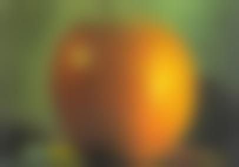

In this part, I explore how convolution kernel filters can be used to detect edges in an image.
Knowing that an image is represented as a 2D array, it could be said that edges of an image are
areas where the intensity of the pixels change rapidly. To detect these edges, we can use a filter
that is sensitive to changes in intensity. One of the most simple filters that achieves this is the
filter \( \mathbf{D_x} = \left[ 1 \,\, -1 \right]\). This filter, when convolved with an image, will
highlight the vertical edges in the image. Similarly, the filter \( \mathbf{D_y} = \left[ 1 \,\, -1 \right]^T \)
will highlight the horizontal edges in the image. Then, the gradient magnitude is computed by the following
formula.
Finding the gradient magnitude is useful since it provides a single value that represents the strength
of the edges in the image, regardless of their direction. Then, the gradient magnitude image is binarized
by setting a threshold to further remove noise. Here are the results:
Cameraman
Cameraman convolved with \(\mathbf{D_x}\)
Camerman convolved with \(\mathbf{D_y}\)
Cameraman image convolved with \( \mathbf{D_x} \) and \( \mathbf{D_y} \) filters.
Observe how vertical edges are highlighted with the \( \mathbf{D_x} \) image (e.g. the vertical rod in the tripod)
and horizontal edges in the \( \mathbf{D_y} \) image (e.g. the horizon and buildings in the background).
Cameraman (Gradient magnitude)
Cameraman (Gradient magnitude) Binarized with threshold 0.23.
Gradient magnitude image generated by square root of sum of squares of \( \mathbf{D_x} \) and \( \mathbf{D_y} \) images.
The image on the right has been binarized with threshold of 0.23 which highlights the edges in the image while removing noise.
Although the binarization threshold of 0.23 works well for the Cameraman image, it still struggles to
remove noise in the image while keeping valid edges. To address this, Gaussian blur can be applied to
the image to remove noise before applying the gradient magnitude filter. Here are the results:
Blurred Cameraman
Blurred Cameraman (Gradient magnitude)
Blurred Cameraman (Gradient magnitude) Binarized with threshold 0.03.
Here, the Cameraman image has been blurred with a Gaussian filter of size 15 and standard deviation 3 to remove noise.
Notice how the binarized images successfully highlight the edges in the image while removing noise.
Derivative of Gaussian Filter
The process of blurring an image with a Gaussian filter and then taking the derivative of the blurred
image can also be performed by a single convolution operation with the derivative of Gaussian filter.
This can improve the efficiency of the process by reducing the number of convolution operations on original image.
I verify that this process is equivalent to running Gaussian blur and then taking the gradient magnitude of the blurred image.
The images here are obtained by a single convolution operation with the derivative of Gaussian filter.
These images are equivalent to running Gaussian blur and then taking the gradient magnitude of the blurred image.
Part II - Fun with Frequencies
Image Sharpening
Here, we explore the technique of unsharp masking used to sharpen an image. The technique works by
creating a blurred version of the image with Gaussian blur and then subtracting the blurred image
from the original image. Since the blurred image removed the low-frequency components of the image,
the subtraction results in an image that contains high frequencies of the original image. The high
frequencies are then added back to the original image to further sharpen it. Mathematically, it can
be represented as the equation below, where \( f \) is the original image, \( g \) is the Gaussian
kernel (thus \( f * g \) is the blurred image), and \( \alpha \) is a constant that controls the
amount of sharpening.
\( f + \alpha(f - f * g) = (1 + \alpha)f - \alpha f * g = f * \left( (1 + \alpha)e - \alpha g \right) \)
The formula \( f + \alpha(f - f * g) \) can also be rearranged to \( f * \left( (1 + \alpha)e - \alpha g \right) \),
where \( e \) is the identity kernel. This shows that the sharpening process can be applied as a
single convolution operation with the kernel \( (1 + \alpha)e - \alpha g \). I have also noticed that
running convolution reduces the size of the image, so I have reflected the image around the edge to
maintain the original image size. Here are the final results:
Taj Mahal (Original)
Taj Mahal (Low-pass)
Taj Mahal (High-pass)
Taj Mahal (\(\alpha = 0.5\))
Taj Mahal (\(\alpha = 1\))
Taj Mahal (\(\alpha = 4\))
Taj Mahal (\(\alpha = 20\))
Sharpened image of Taj Mahal.
Sharpened image of a locked wheel. Notice how the spokes of the wheel get sharpened.
Sharpened image of a chalkboard. Higher \(\alpha\) values make faint chalk marks more prominent.
Hybrid Images
Hybrid images are images that look like one image up close and another image from a distance. This
effect is achieved by combining the high-frequency components of one image with the low-frequency
components of another image. The low-frequency component is obtained by running a Gaussian blur filter
on the original image, and the high-frequency component is obtained by subtracting the low-pass
filtered image from the original image. Then, the low-pass image of one image is added to the high-pass
image of another image to create the hybrid image. I have also enabled color for hybrid images, and since
the low-pass image dominates the color, it adds more vibrancy to the image when it is viewed afar. However,
in cases like Derek and Nutmeg hybrid image, Derek dominating the color can make Nutmeg less noticeable.
The results of the hybrid images are shown below.
Derek
Nutmeg
Derek Nutmeg Hybrid (Gray)
Derek Nutmeg Hybrid (Color)
Hybrid image of a Derek and his cat Nutmeg. \(\sigma_{derek}=5.8\), \(\sigma_{owl}=4.6\), \(k_{size}=17\).
The image looks like Nutmeg up close. The combined image is cropped and rotated to remove black borders.
Frog
Owl
Frog Owl Hybrid (Gray)
Frog Owl Hybrid (Color)
Hybrid image of a black rain frog and an owl. \(\sigma_{frog}=2.4\), \(\sigma_{owl}=3.6\), \(k_{size}=11\).
The image looks like an owl up close. The combined image is cropped and rotated to remove black borders.
Frequency Analysis of Frog Owl Hybrid Image
Frog FFT
Frog Filtered FFT
Owl FFT
Owl Filtered FFT
Frog Owl Hybrid FFT
Frequency analysis of the frog, owl, and hybrid images.
The hybrid image has the low-frequency components of the frog and high-frequency components of the owl.
Failure example:
Earth
Marble
Earth Marble Hybrid (Gray)
Earth Marble Hybrid (Color)
Hybrid image of Earth and a marble. \(\sigma_{earth}=2\), \(\sigma_{marble}=10\), \(k_{size}= 40 \).
Although the marble texture is only visible up close, it still looks like Earth.
Multiresolution Blending
In this part, I explore the technique of multiresolution blending to combine two images together. This
technique works by creating a Laplacian stack for each image and then blending the stacks
together. Specifically, I take the two images and create Laplacian stacks at each level. I also create
a stack of Gaussian filter by running low-pass Gaussian filtering on the black-white filter image. These two stacks
are then added up by the following formula:
, where \(l_k^A\) is the Laplacian stack layer \(k\) of image \(A\), and \(m_k\) is the \(k\)th layer of Gaussian
low-pass filter stack. Finally, the base Gaussian split image, \(SG_k\), obtained by running Gaussian low-pass filter \(k\) times
on image combined with the black-white filter, is added to the final Laplacian stack sum \(L\) to obtain the final image.
The results on Oraple and other images are shown below.
Oraple Gaussian #1

Oraple Gaussian #2
Oraple Gaussian #3
Oraple Gaussian #4
Oraple Gaussian #5
Oraple Laplacian #1
Oraple Laplacian #2
Oraple Laplacian #3
Oraple Laplacian #4
Oraple Laplacian #5
Visualization of Gaussian and Laplacian (normalized) stack of Szelski's Oraple image.
Apple
Orange
Oraple
Oraple created with a vertical split mask.
Bowl 1
Bowl 2
Bowl Mask
Bowl (Merged)
Mixed bowl for the indecisive.
Car 1
Car 2
Car Mask
Car (Merged)
A hybrid vehicle. The merge would have been better if the cars had similar color.
Sofa
Building with Eyes
Sofa Mask
Sofa (Merged)
Application of custom mask on combining sofa and eyes.
Tower 1
Tower 2?
Tower Mask
Tower (Merged)
Towers merged together. The large difference in background makes the merge less seamless.